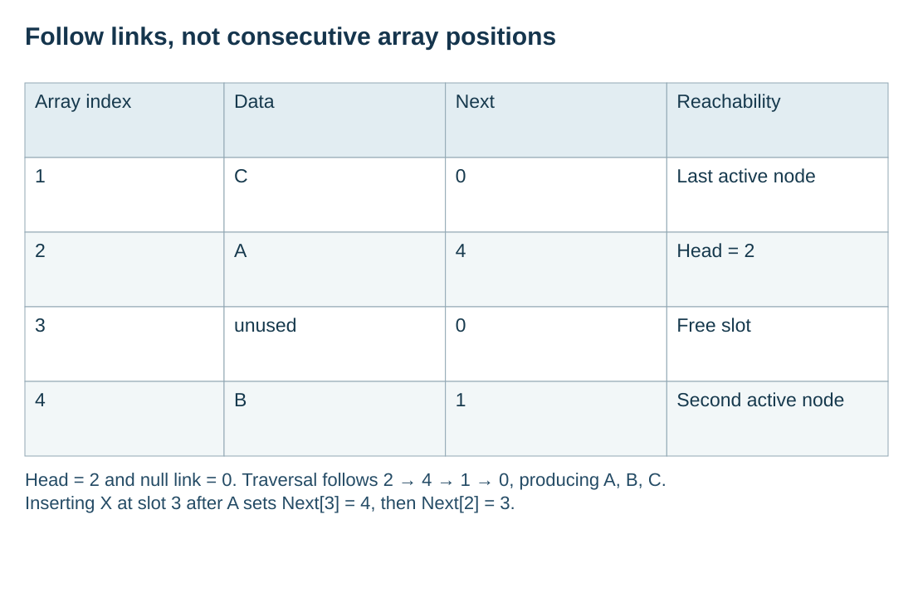

Represent a sequence using nodes and links
Visual overview
Follow links, not consecutive array positions

Visual transcript
- Array index: 1; Data: C; Next: 0; Reachability: Last active node.
- Array index: 2; Data: A; Next: 4; Reachability: Head = 2.
- Array index: 3; Data: unused; Next: 0; Reachability: Free slot.
- Array index: 4; Data: B; Next: 1; Reachability: Second active node.
- Head = 2 and null link = 0. Traversal follows 2 → 4 → 1 → 0, producing A, B, C.
- Inserting X at slot 3 after A sets Next[3] = 4, then Next[2] = 3.
Identify nodes, head and the null link
A linked list contains nodes, each holding data and a link to the next node. A head pointer identifies the first node. In the model used here, a link value of 0 means no next node; Head = 0 represents an empty list. The last active node has a null link.
Follow logical order through physical storage
Logical order is determined by links, not by consecutive storage positions. Follow the head and successive links to traverse the list. A linked list suits a sequence that needs insertions or deletions between neighbours because changing links can avoid shifting every following data item, although locating the required node may still require traversal.
Follow the starting chain
| Current index | Data returned | Next index |
|---|---|---|
| 2 | A | 4 |
| 4 | B | 1 |
| 1 | C | 0: stop |
Separate a slot address from an ordinal position
These links are INTEGER array indices. The value 0 is a null-link convention outside indices 1 through 4, not a node to read. A node at array index 4 can be second in the logical sequence. Directly selecting slot 4 and selecting the fourth item in the list are different tasks.
State the benefit and the limitation together
Insertion between known neighbours changes links rather than shifting all later values. Finding a named item still requires checking nodes along the chain unless some additional index has been supplied. Array-backed nodes have fixed total capacity even though their logical order can change.
Worked example · Traverse a non-contiguous list
- Start
Head = 2, so read Data[2] = A.
- Follow links
Next[2] = 4 gives B; Next[4] = 1 gives C.
- Stop
Next[1] = 0 ends traversal. The output order is A, B, C.
Core explanation · Exam essentials
- Nodes store data and links; Head identifies the first node and a null link ends traversal.
- Logical order follows links, not consecutive array positions.